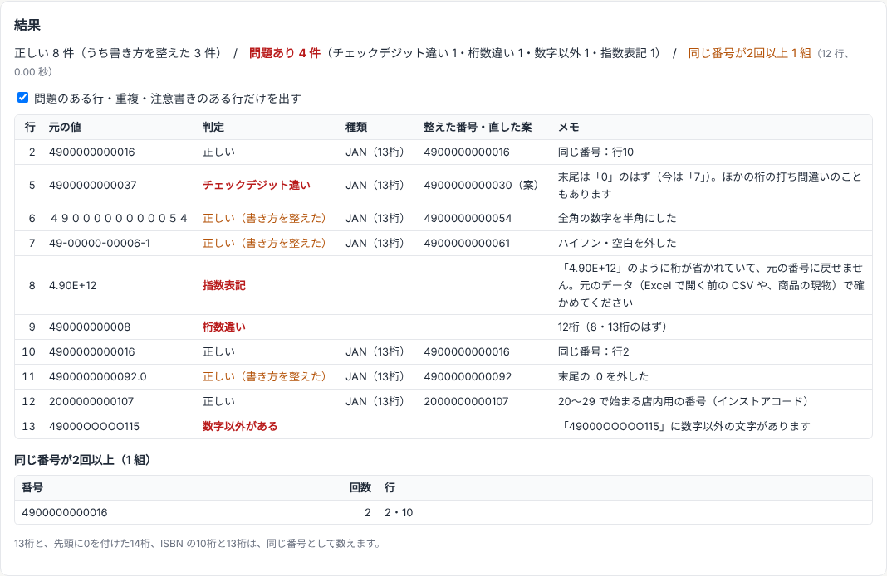

商品コードの検査（JAN・ISBN・ITF・UPC）
商品マスタや在庫表、書籍のリストにあるJAN・ISBN などの番号の列を1行ずつ調べて、チェックデジット（末尾の数字）が合わない番号、桁数が違う番号、Excel で崩れた番号、同じ番号の重複を一覧にするツールです。ネットショップへの商品登録や取引先への商品データの提出の前に、番号の打ち間違いをまとめて見つけられます。ソフトのインストールは不要で、いつものブラウザで動きます。
お試し版はすべての機能を使えて、調べる・印刷・保存は先頭30行までです。決済が終わると、そのまま製品版の画面に移動します。ブックマークしておけば何度でも使えます。

見本のデータ（架空の文房具12件）を調べた例。番号は説明のための架空のもので、実在の商品とは関係ありません。
こんなときに
- ネットショップやモールに商品を登録したら「JAN コードが正しくありません」と言われ、どの商品の番号が間違っているのか探したい
- 取引先や卸に出す商品マスタの JAN を、出す前にまとめて点検したい
- CSV を Excel で開いて保存したら、JAN が「4.90E+12」になったり、末尾に「.0」が付いたりした行を見つけたい
- 古本・書籍のリストに ISBN の10桁と13桁がまざっていて、正しい番号か、同じ本が2回入っていないかを確かめたい
- 12桁の番号はあるが末尾の数字がなく、13桁の JAN の形にしたい
できること
- チェックデジットの検査：JAN（13桁・短縮8桁）、UPC-A（12桁）、ITF-14・GTIN-14（14桁）、ISBN（13桁・10桁、末尾の X も）の末尾の数字を計算して、合わない番号を「末尾は 0 のはず（今は 7）」のように出します
- 桁数の検査：種類を決めると（例：JAN 13桁だけ）、桁の足りない・多い番号を出します。先頭に0を補うと正しい番号になるもの（Excel で先頭の0が消えたもの）は「先頭の0が消えた」と分けて、補った番号を出します
- Excel で崩れた番号：「4.90E+12」のように桁が省かれた番号は「元に戻せない」として一覧に。全桁が残っている指数表記や、末尾の「.0」、全角の数字、ハイフン・空白、先頭の「'」は整えてから調べます
- 重複：同じ番号が2回以上出てくる行を組にして出します。13桁と先頭に0を付けた14桁、ISBN の10桁と13桁も同じ番号として数えます
- 注意書き：20〜29 で始まる店内用の番号（インストアコード）、書籍の2段目のバーコード（192 で始まる）、ISBN の10桁に対する13桁の番号を、メモ欄に出します
- 末尾の数字を付ける：12桁（JAN）・7桁（短縮）・11桁（UPC-A）・13桁（ITF-14）・ISBN の12桁や9桁の番号に、チェックデジットを付けた番号を作ります
- 保存と印刷：元の表に「整えた番号」「判定」「直した案」「同じ番号の行」の列を足した明細を、Excel ファイル（番号は文字として入るので開いても崩れません）か CSV で保存できます。問題の一覧は A4 で印刷できます
- CSV（UTF-8・Shift_JIS）と Excel ファイル（.xlsx）を読めます。番号の列は見出しと中身から自動で選びます。Excel の表をコピーして貼り付けても使えます
できないこと（購入前にご確認ください）
- 番号がどの商品のものか（登録されている番号か、別の商品の番号を書いていないか）は調べられません。分かるのは、番号の形と末尾の数字が正しいかどうかまでです
- チェックデジットが合わない番号の「直した案」は、末尾の1桁だけを直したものです。実際にはほかの桁の打ち間違いのこともあるので、商品の現物や元の資料で確かめてください
- 「4.90E+12」のように桁が省かれてしまった番号は、元に戻せません（省かれた桁はファイルに残っていないため）
- JAN の番号そのものの取得（事業者コードの登録）や、バーコードの画像を作ることはできません
- スマートフォンでは操作しにくいため、パソコンでお使いください
Excel だけでチェックデジットを確かめるなら
A2 に13桁の JAN が文字として入っているなら、空いている列の2行目に
=MOD(10-MOD(SUMPRODUCT(MID(A2,{1,3,5,7,9,11},1)*1)+SUMPRODUCT(MID(A2,{2,4,6,8,10,12},1)*3),10),10)
と入れると、正しい末尾の数字が出ます。左から奇数番目の桁はそのまま、偶数番目の桁は3倍して足し、合計の1の位を10から引いたもの（10 のときは 0）がチェックデジットです。さらに隣の列に =IF(LEN(A2)<>13,"桁数違い",IF(B2=--RIGHT(A2,1),"OK","違う")) と入れて下までコピーすれば、合わない行を見つけられます（B 列に上の式がある場合）。
このツールが向いているのは、8桁・13桁・14桁や ISBN の10桁がまざっている、「4.90E+12」や「.0」、ハイフン入りなど番号の書き方がばらばら、同じ番号の重複や先頭の0の消えも一緒に見たい、といった式だけでは手間のかかるときです。
よくある質問
| どの列が番号か、自分で選ぶのですか？ | 「JAN」「ISBN」「バーコード」「商品コード」などの見出しと、列の中身（8・13桁などの数字が多いか）から自動で選びます。違っていたら画面で選び直せます。見出しに ISBN とあれば ISBN として、JAN とあれば JAN（13桁・8桁）として調べます。 |
|---|---|
| Excel で開いて保存した CSV でも大丈夫ですか？ | 読めます。末尾の「.0」や、全部の桁が残っている指数表記は元の番号に戻して調べます。「4.90E+12」のように桁が省かれたものは、戻せない番号として行番号つきで一覧にします。Excel ファイル（.xlsx）を読み込む場合は、セルの表示が指数表記でも中の数を使うので、そのまま調べられます。 |
| データはどこかに送られますか？ | 送られません。読み込み・計算・印刷はすべてお使いのブラウザの中で行います。表題など一部の設定だけをブラウザに保存し、表の中身は保存しません。 |
| 何行まで使えますか？ | 製品版は行数の制限はありません。数万行の商品マスタでも数秒以内に調べられます。画面の一覧は500行まで表示し、全部は保存したファイルに入ります。 |
安心してお使いいただくために
- 表はお使いのブラウザの中だけで処理し、サーバーには送信しません
- 動作環境：最新版の Chrome・Safari・Edge・Firefox（パソコン）
- 説明どおりに動かない場合は、ご購入から7日以内にご連絡いただければ返金します
Excel で先頭の0が消えた郵便番号・電話番号もまとめて直すなら Excel で壊れた番号の検出と復元、管理番号の抜けや重複を調べるなら 番号の抜け・重複チェック もあります。